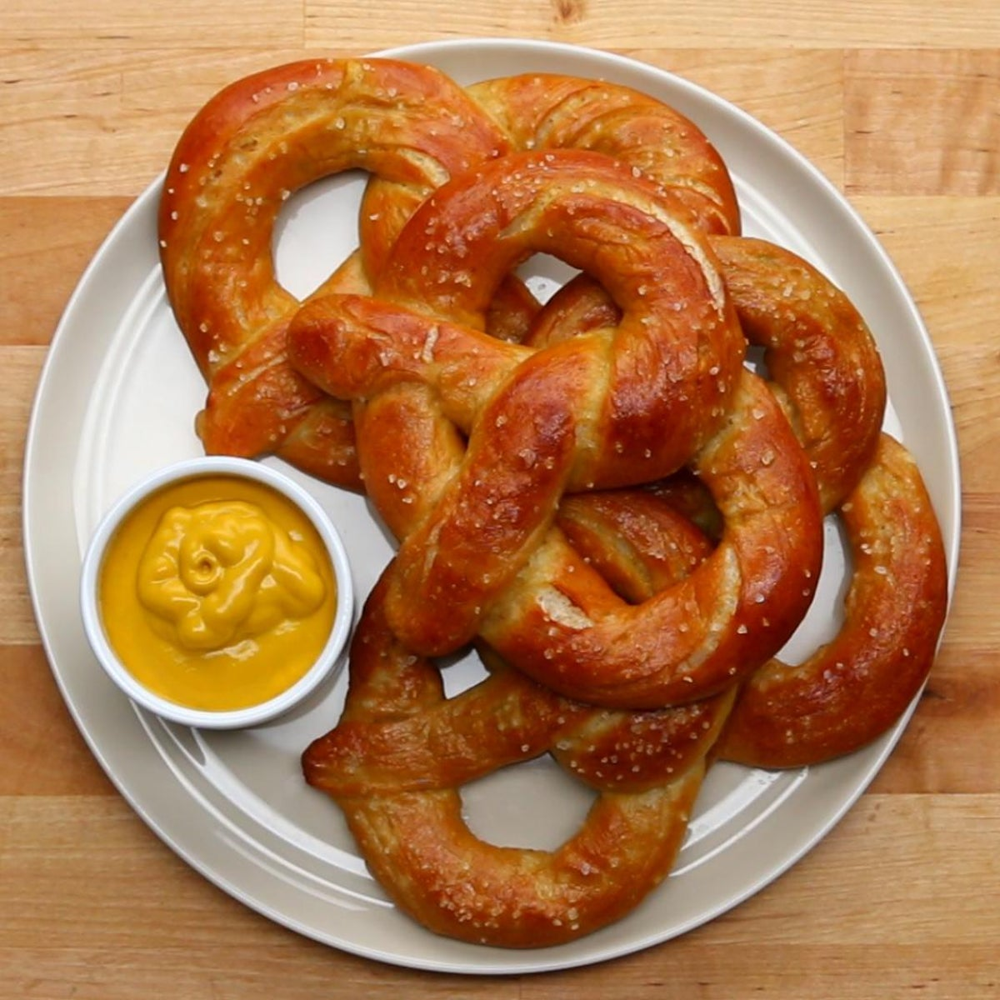

Go back
Homeade Pretzel

Description
Homeade pretzels just like Grandma used to make
Ingredients
- 1 cup and 2 tablespoons of water, seperate
- 3 cups of flour
- 3 tablespoons brown sugar
- 1 and a half active dry yeast
- 2 quarts water
- 1/2 cup baking soda
- coarse salt
Instructions
- Create bread in bread machine
- Form into pretzel shape
- Preheat oven and dip pretzels into water and baking soda boiling
- Bake pretzels at 425 until golden brown